This page describes the vehicle parameter defaults depending on the vehicle class. If no values are given the values for passenger are used. It uses as default always the values in the first line for each vehicle class. The other values (in the subsections) are just an information (to be used with own vehicle types).
Note
The correct setting may be dependent on the car-following model in use. This is especially true for accel and decel which
usually do not denote the maximum values achievable by the vehicle but rather the convenient values. If you use a different model than Krauss you should probably revisit the values.
Please note that personCapacity and mass do usually not include a driver in the tables below.
(So a bicycle has a capacity of 1 and this does not mean the children's seat but the driver; and a mass of 10kg
obviously does not include the driver.) The only exception here is the default passenger car which has
a capacity of 4 while the average car out there has probably rather 5 places. But using all 5 places is
probably rather exceptional so the historic default has been kept and it is maybe the better value for taxi scenarios as well.
Please also note that the mass in the handbook
of a private car usually includes the average driver's weight.
Whether the exclusion is correct or not also depends on the way you set up the simulation. If persons are modelled explicitly it is right, if not, you probably do not care about personCapacity and variable mass anyway, but if you do please revisit your vType settings.
Pedestrians and Two-Wheelers#
vClass |
example | guiShape |
lengthwidthheight |
mass |
minGap |
accel |
decel |
emergencyDecel |
maxSpeed |
desiredMaxSpeed |
personCapacity |
emissionClassHBEFA3 |
speedDev |
|---|---|---|---|---|---|---|---|---|---|---|---|---|---|
| pedestrian | 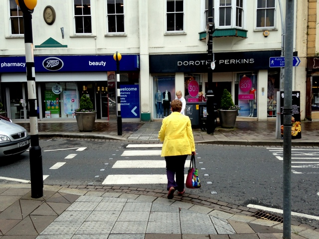 | pedestrian |
0.215m(1) 0.478m(1) 1.719m(1) |
70kg | 0.25m | 1.5m/s2(23) | 2m/s2(23) | 5m/s2 | 37.58km/h(41) | 5km/h(23) | 0 | zero | 0.1 |
| bicycle | 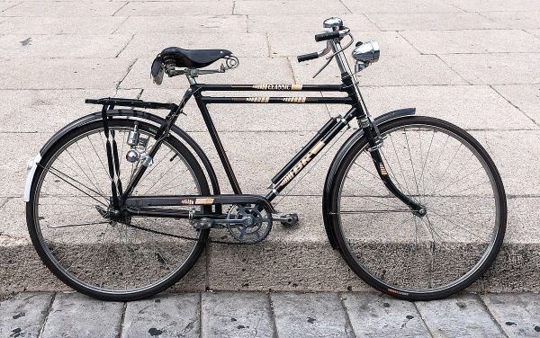 | bicycle |
1.6m(17) 0.65m(17) 1.7m(*) |
10kg | 0.5m | 1.2m/s2(19) | 3m/s2(19) | 7m/s2 | 50km/h | 20km/h(19) | 1 | zero | 0.1 |
| moped | 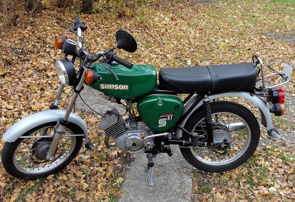 | moped |
2.1m(43) 0.8m(43) 1.7m(*) |
80kg | 2.5m | 1.1m/s2(25) | 7m/s2(26) | 10m/s2 | 45km/h(24) | - | 2 | LDV_G_EU6 | 0.1 |
| motorcycle | 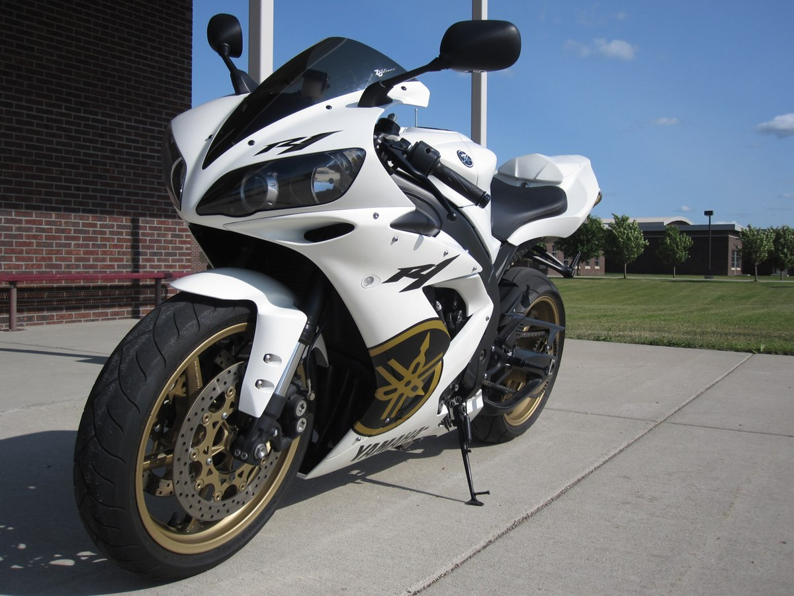 | motorcycle |
2.2m(28) 0.9m(28) 1.5m(28) |
200kg | 2.5m | 6m/s2(19) | 10m/s2(27) | 10m/s2 | 200km/h(28) | - | 2 | LDV_G_EU6 | 0.1 |
| scooter | 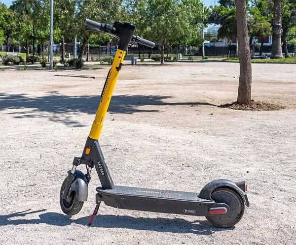 | scooter |
1.2m(*) 0.5m(*) 1.7m(*) |
10kg(*) | 0.5m(39) | 1.2m/s2(39) | 3m/s2(39) | 7m/s2(*) | 25km/h(39) | 20km/h | 1 | zero | 0.1 |
Passenger Cars and Light Delivery#
vClass |
example | guiShape |
lengthwidthheight |
mass |
minGap |
accel |
decel |
emergencyDecel |
maxSpeed |
desiredMaxSpeed |
personCapacity |
emissionClassHBEFA3 |
speedDev |
|---|---|---|---|---|---|---|---|---|---|---|---|---|---|
| passenger |  |
passenger |
5(29) 1.8m(29) 1.5m(29) |
1500kg | 2.5m | 2.6m/s2(29) | 4.5m/s2(27) | 9m/s2 | 200km/h(29) | - | 4 | PC_G_EU4 | 0.1 |
| taxi | 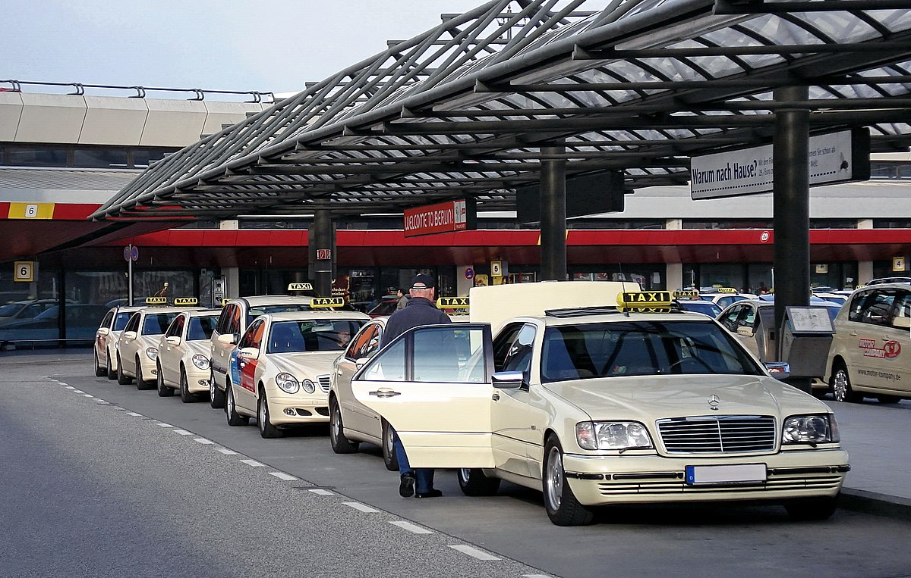 | taxi |
5(29) 1.8m(29) 1.5m(29) |
1500kg | 2.5m | 2.6m/s2(29) | 4.5m/s2(27) | 9m/s2 | 200km/h(29) | - | 4 | PC_G_EU4 | 0.05 |
| evehicle | 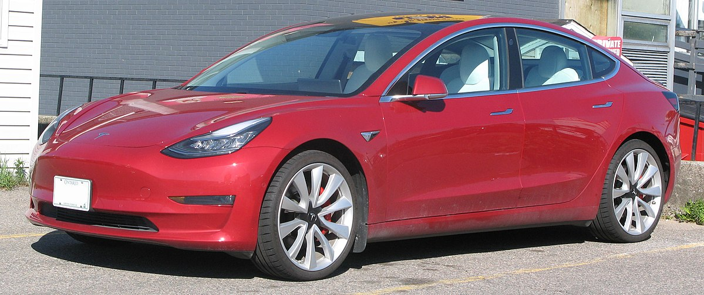 | evehicle |
5(29) 1.8m(29) 1.5m(29) |
1500kg | 2.5m | 2.6m/s2(29) | 4.5m/s2(27) | 9m/s2 | 200km/h(29) | - | 4 | zero | 0.1 |
| emergency | emergency |
6.5m(37) 2.16m(37) 2.86m(37) |
5000kg | 2.5m | 2.6m/s2(29) | 4.5m/s2(27) | 9m/s2 | 200km/h(29) | - | 3 | LDV | 0 | |
| delivery | 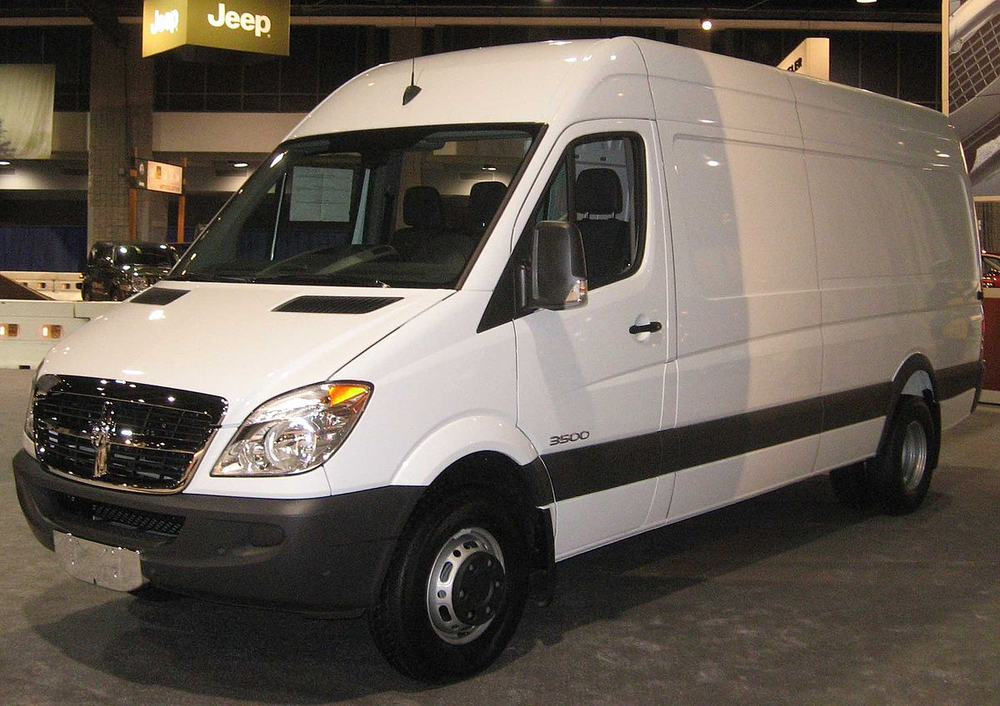 | delivery |
6.5m(37) 2.16m(37) 2.86m(37) |
5000kg | 2.5m | 2.6m/s2(29) | 4.5m/s2(27) | 9m/s2 | 200km/h(29) | - | 3 | LDV | 0.05 |
The evehicle has been added in a time when electric vehicles still seemed futuristic and is kept for backward compatibility.
The intended use is for any kind of new vehicle concept which should be visually distinguishable and is of unknown emission status (hence zero emissions).
Recommended subclass settings#
All passenger cars share the defaults listed above, the values below are just ideas what alternatives might be appropriate for different models:
vClass |
example | guiShape |
lengthwidthheight |
personCapacity |
|---|---|---|---|---|
| passenger | 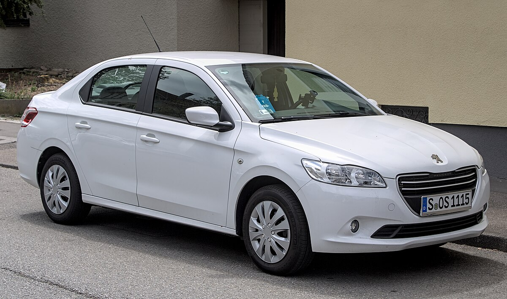 | passenger/sedan |
5 | |
| passenger | 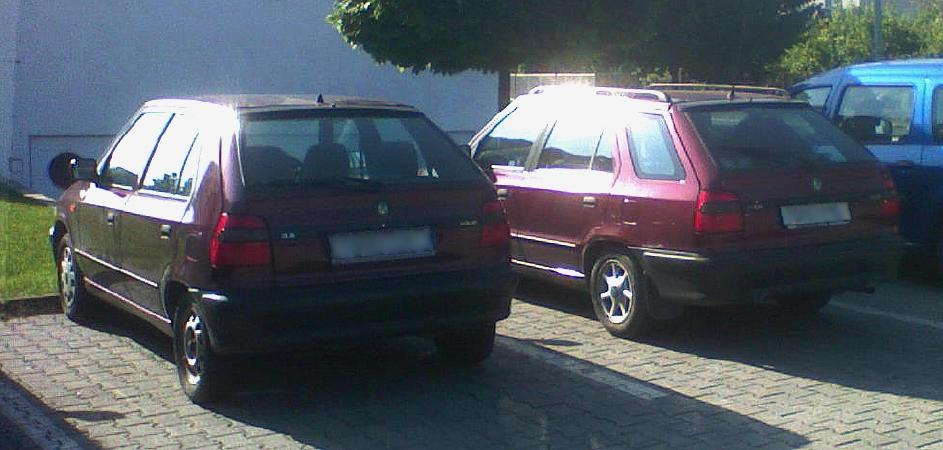 | passenger/hatchback |
5 | |
| passenger | 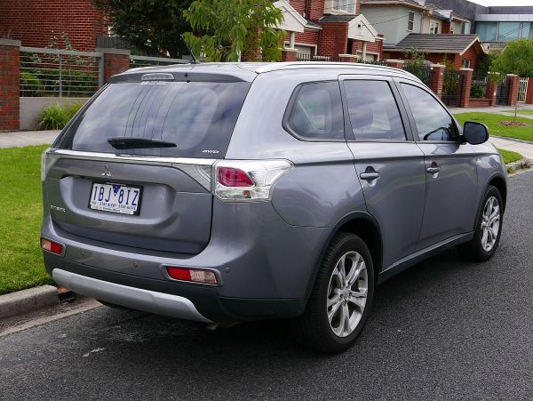 | passenger/wagon |
5 | |
| passenger | 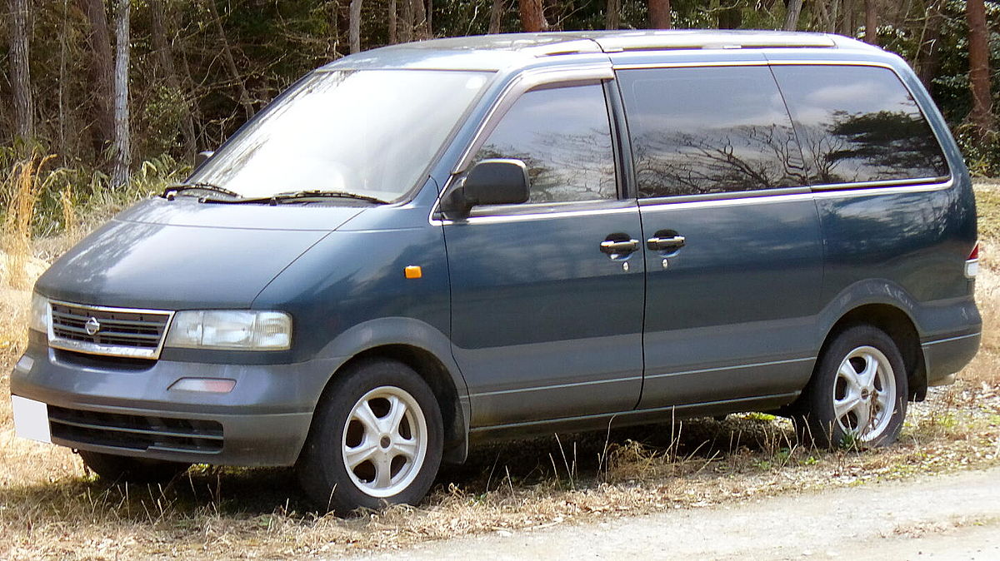 | passenger/van |
4.7m(16) 1.9m(16) 1.73m(16) |
6 |
Trucks and Busses#
vClass |
example | guiShape |
lengthwidthheight |
mass |
minGap |
accel |
decel |
emergencyDecel |
maxSpeed |
desiredMaxSpeed |
personCapacity |
emissionClassHBEFA3 |
speedDev |
|---|---|---|---|---|---|---|---|---|---|---|---|---|---|
| truck | 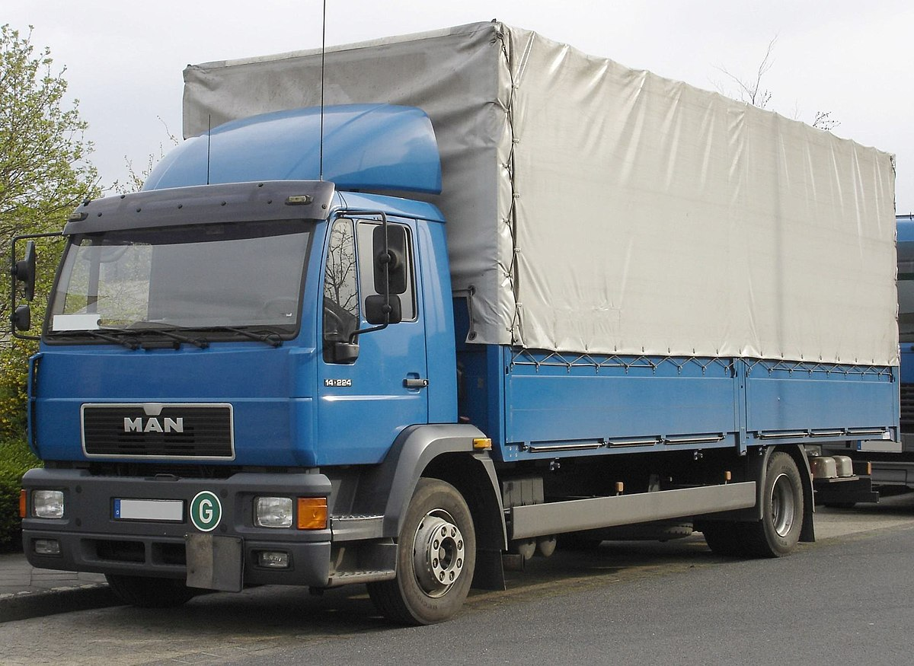 | truck |
7.1m(30) 2.4m(30) 2.4m(30) |
12000kg | 2.5m | 1.3m/s2(31) | 4m/s2(27) | 7m/s2 | 130km/h(35) | - | 3 | HDV | 0.05 |
| trailer | 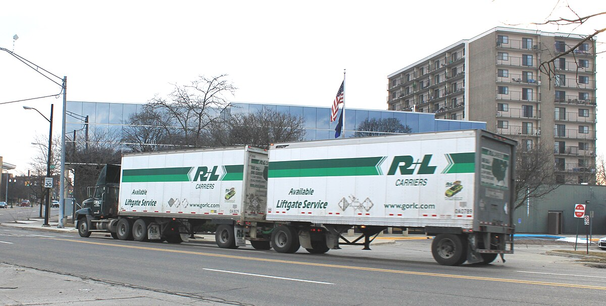 | truck/trailer |
16.5m(13) 2.55m(13) 4m(13) |
15000kg | 2.5m | 1m/s2(31) | 4m/s2 | 7m/s2 | 130km/h(35) | - | 3 | HDV | 0.05 |
| bus | 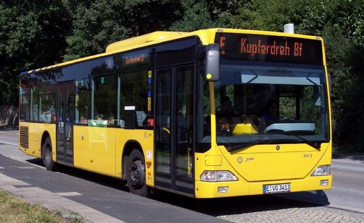 | bus |
12m(3) 2.5m(3) 3.4m(3) |
7500kg | 2.5m | 1.2m/s2(18) | 4m/s2(27) | 7m/s2 | 85km/h(3) | - | 85 | Bus | 0.1 |
| coach | 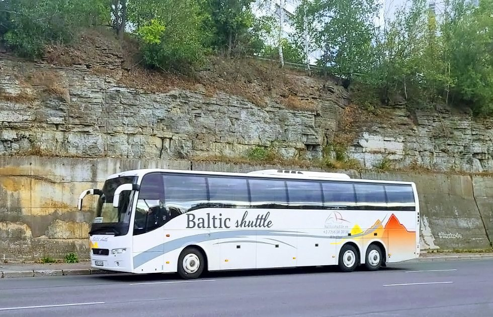 | bus/coach |
14m(9) 2.6m(9) 4.m(9) |
12000kg | 2.5m | 2.0m/s2(*) | see above | see above | 100km/h(32) | - | 70(9) | Coach | 0.05 |
Recommended subclass settings#
vClass |
example | guiShape |
lengthwidthheight |
minGap |
accel |
personCapacity |
|---|---|---|---|---|---|---|
| trailer | 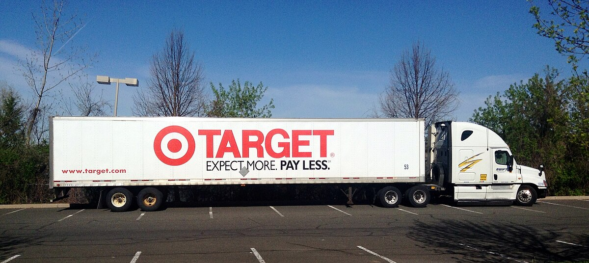 | truck/semitrailer |
16.5m(14) max. 2.55m(13) max. 4m(13) |
2.5m | 1.1m/s2(31) | 3 |
| bus | 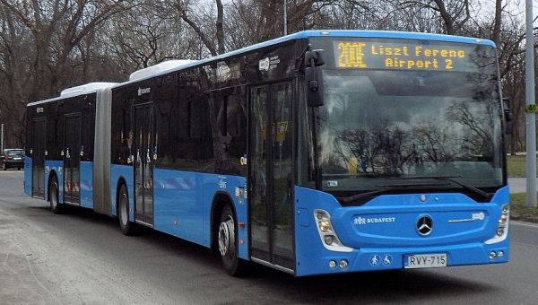 | bus/flexible |
17.9m(3) 2.5m(3) 3.0m(3) |
2.5m | 1.2m/s2(18) | ~150 |
Rail#
vClass |
example | guiShape |
lengthwidthheight |
mass |
minGap |
accel |
decel |
emergencyDecel |
maxSpeed |
desiredMaxSpeed |
personCapacity |
emissionClassHBEFA3 |
speedDev |
|---|---|---|---|---|---|---|---|---|---|---|---|---|---|
| tram | 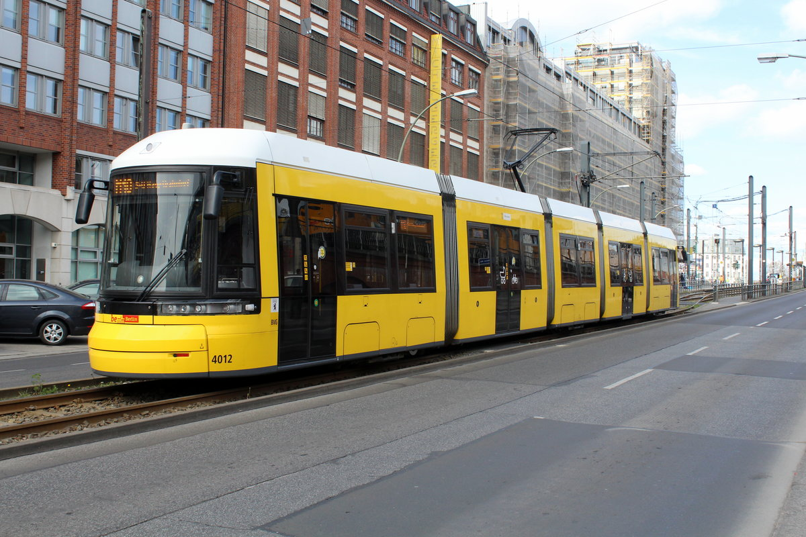 | rail/railcar |
22m(7) 2.4m(7) 3.2m(7) |
37900kg | 2.5m | 1.0m/s2(18) | 3.0m/s2(27) | 7m/s2 | 80km/h(36) | - | 120(7*) | zero | 0 |
| rail_urban | 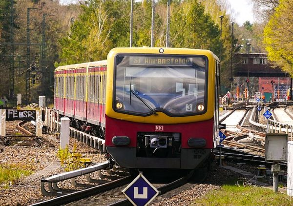 | rail/railcar |
3*36.5m(4) 3.0m(4) 3.6m(4) |
59000kg | 5m | 1.0m/s2(4) | 3.0m/s2(27) | 7m/s2 | 100km/h(4) | - | 3*100 | zero | 0 |
| rail | 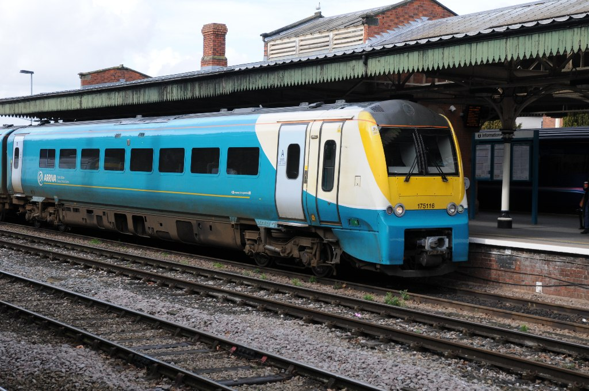 | rail |
2*67.5m(11) 2.84m(11) 3.75m(11) |
79500kg(42) | 5m | 0.25m/s2(34) | 1.3m/s2(33) | 5m/s2 | 160km/h(11) | - | 434(11) | HDV_D_EU0 | 0 |
| rail_electric | 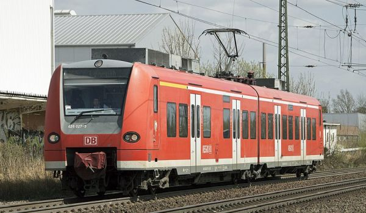 | rail |
8*25m(12) 2.95m(12) 3.89m(12) |
83000kg(42) | 5m | 0.5m/s2(33) | 1.3m/s2(33) | 5m/s2 | 220km/h(12) | - | 425(12) | zero | 0 |
| rail_fast | 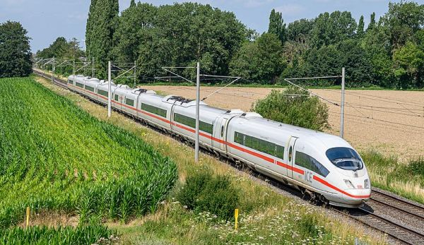 | rail |
8*25m(12) 2.95m(12) 3.89m(12) |
409000kg | 5m | 0.5m/s2(33) | 1.3m/s2(33) | 5m/s2 | 330km/h(12) | - | 425(12) | zero | 0 |
Recommended subclass settings#
vClass |
example | guiShape |
lengthwidthheight |
maxSpeed |
personCapacity |
|---|---|---|---|---|---|
| rail | 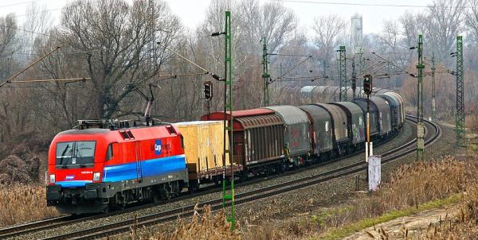 | rail/cargo |
~750m (19m + x*16m)(5, 6, 8) ~4.4m(6) ~3.0m(6) |
120km/h(5) | 1 |
Ships#
vClass |
example | guiShape |
lengthwidthheight |
mass |
minGap |
accel |
decel |
emergencyDecel |
maxSpeed |
desiredMaxSpeed |
personCapacity |
emissionClassHBEFA3 |
speedDev |
|---|---|---|---|---|---|---|---|---|---|---|---|---|---|
| ship | 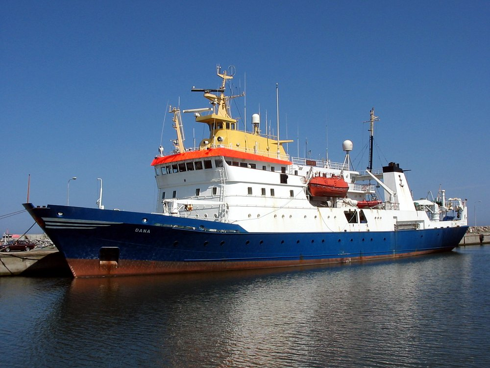 | ship |
17m 4m 4m |
100000kg | 2.5 | 0.1m/s2 | 0.15m/s2 | 1m/s2 | 4.12 (8 Knots) | - | 4 | HDV_D_EU0 | 0.1 |
Footnotes#
- (1): https://www.baua.de/DE/Angebote/Publikationen/AWE/AWE108.pdf?__blob=publicationFile
- (2): https://web.archive.org/web/20100531025842/https://www.motorrad-leuschner-d.de/motorraeder.html
- (3): https://web.archive.org/web/20110313224137/www.bvg.de/index.php/de/binaries/asset/download/470184/file/1-1
- (4): https://de.wikipedia.org/wiki/S-Bahn_Berlin
- (5): https://de.wikipedia.org/wiki/Schieneng%C3%BCterverkehr
- (6): https://de.wikipedia.org/wiki/Bombardier_Traxx
- (7): https://de.wikipedia.org/wiki/GTxN/M/S
- (8): https://de.wikipedia.org/wiki/Flachwagen
- (9): https://de.wikipedia.org/wiki/Reisebus
- (11): https://de.wikipedia.org/wiki/DBAG-Baureihe_425
- (12): https://de.wikipedia.org/wiki/ICE_3
- (14):
https://www.truck.man.eu/man/media/de/content_medien/doc/business_website_truck_master_1/einsatzgebiete/de_2/man-lkw-tg-fernverkehr-volumen.pdf(dead link) - (15): https://de.wikipedia.org/wiki/Opel_Vivaro
- (16): https://de.wikipedia.org/wiki/Renault_Espace_II
- (17): Fußgeher- und Fahrradverkehr: Planungsprinzipien; Hermann Knoflacher; Böhlau Verlag Wien, 1995
- (18): RiLSA 2010
- (19): https://www.colliseum.eu/wiki/images/b/bf/Geschwindigkeiten%2C_Verz%C3%B6gerungen_und_Beschleunigungen_nicht_motorisierter%2C_ungesch%C3%BCtzter_Verkehrsteilnehmer_am_Beispiel_Fahrrad_und_Inlineskates.pdf
- (20): https://tuprints.ulb.tu-darmstadt.de/905/1/Schroeder_Frank_FZD_Diss.pdf
- (21): https://www.unfallrekonstruktion.de/pdf/nickel.pdf
- (22): https://www.trb.org/publications/nchrp/nchrp_rpt_505.pdf (p48)
- (23):
https://jml2012.indexcopernicus.com/fulltxt.php?ICID=1022800(dead link) (pdf p.229-230) - (24): https://de.wikipedia.org/wiki/Kleinkraftrad
- (25): https://de.wikipedia.org/wiki/Vespa_LX
- (26): https://www.colliseum.net/wiki/Bremsversuche_mit_dem_Kleinkraftrad_S_50_/_S_51
- (27): https://web.archive.org/web/20120622045505/https://www.unfallaufnahme.info/uebersichten-listen-und-tabellen/geschwindigkeiten-und-bremswege/index.html
- (28): https://de.wikipedia.org/wiki/BMW_R_1200_GS_K25
- (29): https://www.autoscout24.de/auto/technische-daten/mercedes-benz/vito/vito-111-cdi-kompakt-2003-2014-transporter-diesel/
- (30): https://www.car-plus.de/news/17-7-5-tonner-mieten#:~:text=Unser%207%2C5%2DTonner,-Sie%20mieten%20bei&text=Der%20Laderaum%20ist%206%2C10,mit%20einer%20Maul%2D%20oder%20Kugelkopfkupplung.
- (31): https://www.colliseum.net/wiki/Lkw-Anfahrbeschleunigungswerte_f%C3%BCr_die_Praxis
- (32): https://de.wikipedia.org/wiki/Zul%C3%A4ssige_H%C3%B6chstgeschwindigkeit_im_Stra%C3%9Fenverkehr_(Deutschland)
- (33):
https://www.ice-fansite.com/index.php?option=com_content&view=article&id=195:ice1-techdat&catid=50:icet&Itemid=69(dead link) - (34): https://en.wikipedia.org/wiki/Orders_of_magnitude_(acceleration)
- (35): https://www.researchgate.net/publication/311633504_Improving_Road_Safety_of_Tank_Truck_in_Indonesia_by_Speed_Limiter_Installation
- (36): https://ka.stadtwiki.net/H%C3%B6chstgeschwindigkeit_(Bahn)
- (37): https://www.rettungsdienst.brk.de/leichte-sprache/abteilung/beschaffung/rettungswagen/rtw-by-2010.html
- (39): https://electric-scooter.guide/comparisons/electric-scooter-performance-tests/
- (40): https://www.chip.de/artikel/E-Scooter-Test-Die-besten-Elektro-Scooter-mit-Strassenzulassung_165587317.html
- (41): Average speed on the 100m man's world record
- (42): Locomotive only
- (43): https://de.wikipedia.org/wiki/Puch_MS_50
- (*): estimated